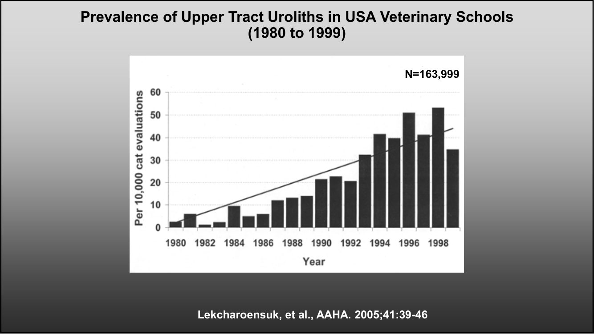
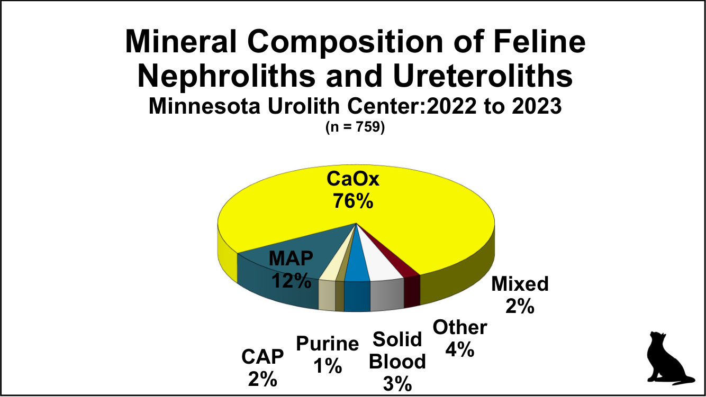
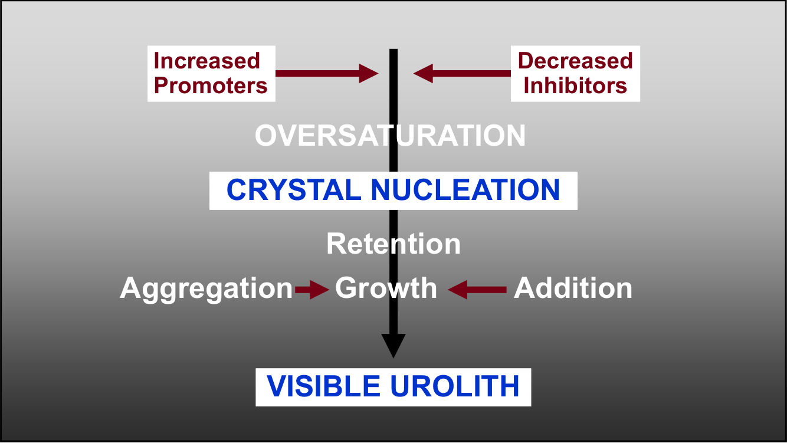
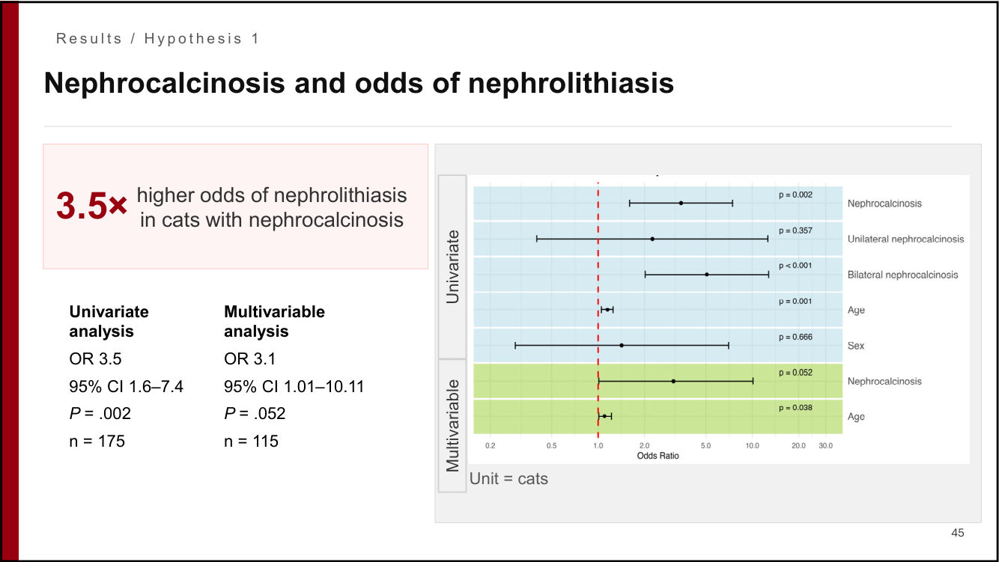
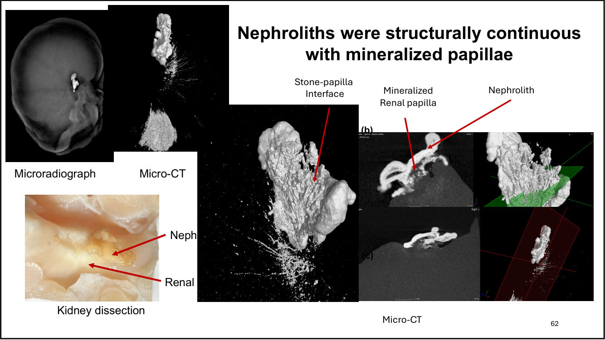
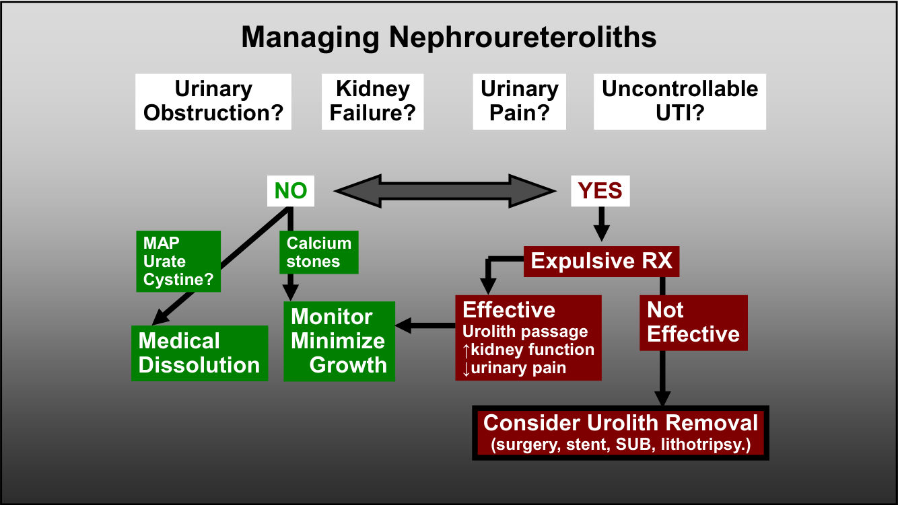
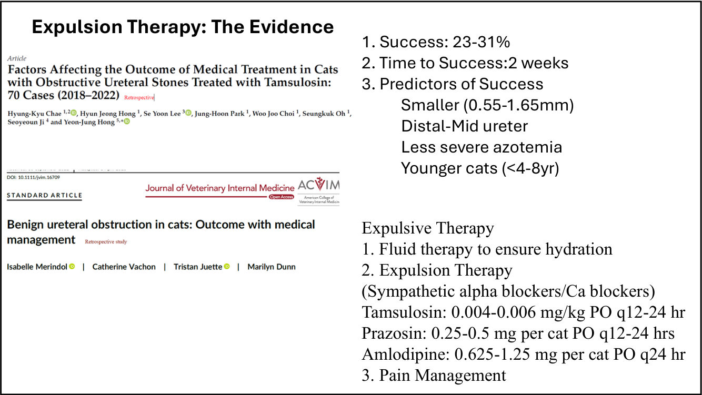
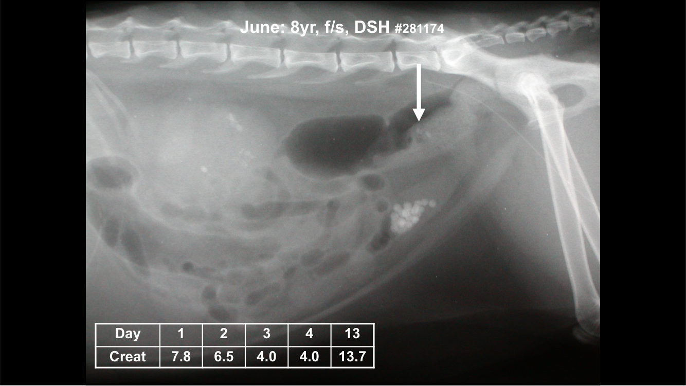
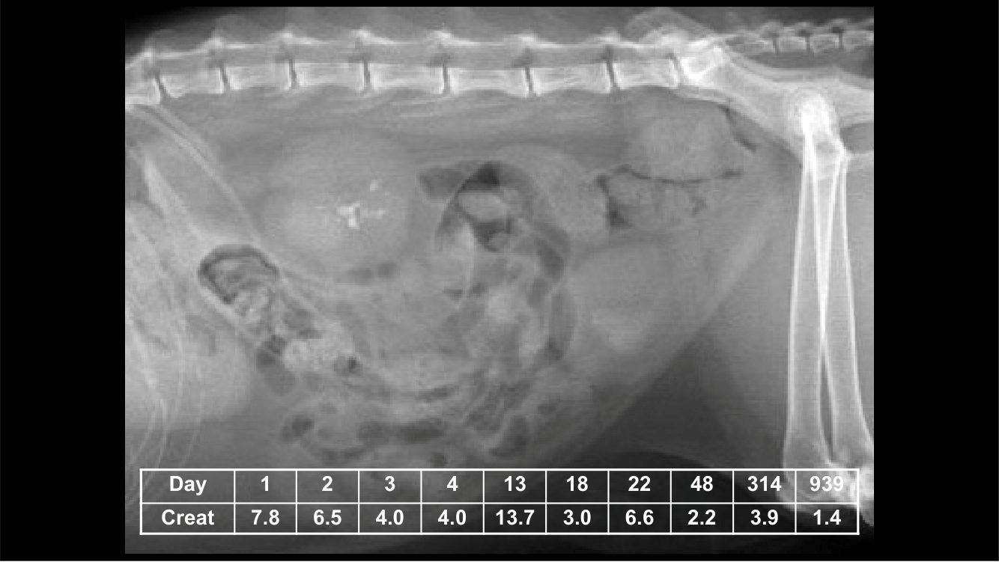

貓的腎與輸尿管結石：內科醫師的觀點
主講：Jody Lulich, DVM, PhD, DACVIM（University of Minnesota／Minnesota Urolith Center）
2026-10-18 講座｜An Internist Perspective on Feline Nephroureterolithiasis — To Cut or Not to Cut（講義 51 頁，每頁 2 張投影片）｜場次 02
目前只有講義，沒有課堂錄音；講義上的影片與現場討論無法收錄。若之後有錄音，會再合併講者的口頭說明。
⭐ 必記原則
- 美國教學醫院的貓上泌尿道結石 20 年間從 每萬隻 3 例增加到 35 例；貓的上泌尿道結石比例遠高於狗（1.7% vs 0.3%）
- 貓腎輸尿管結石 76% 是草酸鈣，鳥糞石只有 12%：多數不能用食物溶解
- 腎輸尿管結石是一個指標：CKD（44–73% 的 CKD 貓有結石）、AKI／輸尿管阻塞、高血鈣、慢性血尿、疼痛
- 高風險：4–12 歲、母貓（？）、CKD、高血鈣
- 老貓的腎鈣化 84%、腎結石 54%；有腎鈣化的貓腎結石的勝算 3.5 倍；條紋狀髓質鈣化勝算最高
- 腎結石和礦化的腎乳頭結構相連：乳頭礦化可能是預防的標靶；osteopontin、osteocalcin 與鈣化共位
- 沒有阻塞、腎衰竭、疼痛或難控制 UTI → 監測、減少長大（鈣結石）或溶解（MAP、urate）；有 → 先試排石治療，無效再考慮移除
- 排石治療成功率 23–31%、約 2 週；小顆、輸尿管中遠段、氮血症較輕、年輕貓較容易成功
盛行率與成分
▾講題與大綱
副標「To Cut or Not to Cut」（要不要開刀）。大綱：盛行率、為什麼在意（疾病指標）、誰有風險、病因是什麼、怎麼處理腎輸尿管結石最好。
美國獸醫教學醫院上泌尿道結石盛行率（1980–1999）
n = 163,999；從 每萬隻貓 3 例增加到 35 例（Lekcharoensuk, JAAHA 2005;41:39-46）。

結石位置：狗 vs 貓（2022–2023）
| 結石總數 | 上泌尿道結石 | 上泌尿道比例 | 比例 | |
|---|---|---|---|---|
| 狗 | 126,795 | 380 | 0.3% | 334 : 1 |
| 貓 | 45,101 | 767 | 1.7% | 59 : 1 |
貓上泌尿道結石的盛行率
| 研究 | 族群 | 盛行率 |
|---|---|---|
| Lekcharoensuk JAAHA 2005 | 美國教學醫院住院（n = 390,318） | 0.35% |
| Wightman, Vet Med Sci 2016 | 紐西蘭與美國診所影像（n = 1190） | 5.3%（< 6 歲 1.5%；> 6 歲 7.2%） |
| Geddes, JVIM 2022 | 英國轉診醫院住院（n = 11,431） | 4.6% |
| Hsu, JFMS 2022 | 超音波診斷 CKD 的貓（n = 140） | 73% |
貓腎結石與輸尿管結石的礦物成分（MUC 2022–2023，n = 759）
| 成分 | 比例 |
|---|---|
| 草酸鈣（CaOx） | 76% |
| 鳥糞石（MAP） | 12% |
| 其他 | 4% |
| 固化血塊 | 3% |
| 磷酸鈣（CAP） | 2% |
| 混合 | 2% |
| 嘌呤 | 1% |

💡 補充 草酸鈣無法用食物溶解，這也是上泌尿道結石處置困難的原因。
1. 為什麼要在意：腎輸尿管結石是疾病的指標
▾可能代表
- 慢性腎病：44–73% 的 CKD 貓有腎輸尿管結石
- 急性腎損傷（輸尿管阻塞？）；無症狀的單側 AKI；潛在的輸尿管阻塞
- 高血鈣：26%（47/176）有腎結石、31%（54/176）有輸尿管結石的貓有高血鈣
- 慢性血尿
- 疼痛？
CKD 的貓
- 腎衰竭臨床試驗（血清肌酸酐 2.1–4.5 mg/dL，n = 189）：44%（83 隻）偵測到結石
- 超音波診斷 CKD 的貓：73%（n = 140）；另一族群 34%（n = 128）
- 講義附一張腎結石組 vs 無腎結石組（各 n = 7）的肌酸酐追蹤圖
造成阻塞的比例
腎輸尿管結石造成阻塞：56.1%（290/517）；住院時已阻塞 53%、住院後才阻塞 3%、沒有阻塞 44%。
有腎輸尿管結石的貓：高血鈣的盛行率與原因
17.3%（62/369）有高血鈣。原因：不明 42%、短暫性 26%、特發性 16%、CKD 11%。與結石相關的高血鈣疾病：年輕、腫瘤、肉芽腫疾病（Broughton, Ionized hypercalcemia in 238 cats, JVIM 2022）。
💡 補充 高血鈣的鑑別見 Texas 21 高血鈣；貓下泌尿道與原發性高血鈣病例見 梅醫師病例討論。
2. 誰有風險？
▾風險因子
- 母貓多於公貓？
- 年紀較大（4–12 歲）
- CKD
- 高血鈣
Geddes et al. JVIM 2024（講義附多變項分析表）。
3. 腎結石怎麼形成？
▾均質成核 vs 異質成核
| 機轉 | 說明 | 病因 |
|---|---|---|
| 均質成核 | 尿液過飽和，晶體自己析出 | 高尿鈣、高草酸尿、遺傳 |
| 異質成核 | 在既有表面上析出；更常見、熱力學上更有利：表面與界面很多，需要的過飽和閾值較低 | 核心（nidus）、組織礦化（礦化的腎乳頭）、新的促進因子、細菌尿、微生物組、混合 |
結石形成的步驟
過飽和 → 晶體成核 → 滯留 → 聚集、生長、累加 → 肉眼可見的結石。促進因子增加、抑制因子減少都會推動這個過程。

4. 研究：腎鈣化、腎乳頭與腎結石
▾腎鈣化（nephrocalcinosis）
腎實質內的鈣鹽沉積；78% 的 CKD 貓有（Tang 2022）。風險因子：血中游離鈣、血漿磷、血漿肌酸酐上升。腎鈣化和腎結石的關係還不清楚，這是知識缺口。
目標 1：腎鈣化的型態與腎結石
- 方法：Feline Kidney Bank（安樂死後 0–24 小時、4°C 保存）；福馬林固定、微放射攝影、組織病理
- 微放射攝影：腎結石＝邊界清楚、高密度；腎鈣化＝瀰漫或區域性、點狀或條紋狀
- 175 隻貓、350 顆腎：腎鈣化 84%（147/175），96% 雙側，較老（中位數 15 vs 6 歲），母貓較多
- 腎結石 54%（95/175），57% 雙側，較老（15 vs 13 歲），沒有性別差異
- 有腎鈣化 → 腎結石勝算 3.5 倍（單變項 P = .002；多變項 3.1，P = .052）
- 腎鈣化的腎中：條紋狀 73%、條紋＋點狀 20%、點狀 6%；腎結石勝算：條紋狀 OR 13.9、條紋＋點狀 OR 18.6、點狀 OR 6.7（不顯著）

腎鈣化可能怎麼促進結石
- 提供結石附著的結構表面
- 改變腎絲球濾液的過飽和
- 和腎結石有共同的致病途徑
目標 2：腎結石和礦化的腎乳頭有結構連接嗎？
假說：貓的腎結石長在穿破尿路上皮的乳頭礦化上，礦化成為結石初期生長的核心。
- 結石端：MUC 送驗的腎結石，用立體顯微鏡、microCT、SEM＋EDS、光學結晶學與紅外光譜
- 腎臟端：Feline Kidney Bank，用微放射攝影、microCT、樹脂包埋的組織病理、SEM＋EDS
- 結果：草酸鈣腎結石表面有磷酸鈣管狀結構（中空或填滿礦物），符合曾附著在乳頭上
- MicroCT 與組織病理確認乳頭礦化與附著的腎結石在三維上連續

結論：腎乳頭礦化可能是預防貓腎結石的標靶。
目標 3：什麼驅動組織礦化？
其他物種提出的機轉：礦物失衡（高尿鈣、高磷尿、高草酸尿）、類成骨分化（RUNX2、BMP-2、osteopontin、Wnt）、細胞傷害與氧化壓力、礦化抑制因子流失（焦磷酸、Tamm-Horsfall 蛋白、osteopontin、fetuin-A）、晶體清除失敗。在貓還不知道。
| 標記 | 與礦化共位 | 礦化區較強 |
|---|---|---|
| Osteopontin（OPN） | 18/18（100%） | 是（P < .001） |
| Osteocalcin（OCN） | 12/18（67%） | 是（P = .003） |
| BMP-2 | 2/18（11%） | —（兩隻都有腎結石） |
| TNAP | 1/18（6%） | — |
| RUNX2 | 0/18 | — |
18 顆條紋狀礦化的腎（10 顆有腎結石、8 顆沒有），有無結石沒有差別。結論：OPN、OCN 與髓質乳頭礦化共位；RUNX2、BMP-2、TNAP 幾乎沒有，表示典型的成骨轉分化可能不是主要驅動因素。
5. 處置流程與排石治療
▾腎輸尿管結石的處置流程
先問四個問題：泌尿道阻塞？腎衰竭？泌尿道疼痛？難以控制的 UTI？
| 處置 | |
|---|---|
| 都沒有 | MAP、尿酸鹽、胱胺酸（？）→ 藥物溶解；鈣結石 → 監測、減少長大 |
| 有 | 排石治療 → 有效（結石排出、腎功能改善、疼痛減輕）→ 回到監測；無效 → 考慮移除結石（手術、支架、SUB、碎石） |

排石治療（Expulsive therapy）
| 步驟 | 內容（講義） |
|---|---|
| 1. 輸液 | 確保水合 |
| 2. 排石藥物（交感 α 阻斷劑／鈣離子阻斷劑） | Tamsulosin 0.004–0.006 mg/kg PO q12–24h Prazosin 0.25–0.5 mg/貓 PO q12–24h Amlodipine 0.625–1.25 mg/貓 PO q24h |
| 3. 止痛 |
證據：成功率 23–31%；成功所需時間約 2 週；成功的預測因子：結石較小（0.55–1.65 mm）、在輸尿管中遠段、氮血症較輕、年輕貓（< 4–8 歲）。

6. 病例 June：8 歲已結紮母貓 DSH
▾病史與檢查
- 病史：嗜睡、厭食、嘔吐 2 天；成貓維持乾糧
- PE：T 101°F、P 140、R 20；體重 14.6 磅；輕度脫水；右腎 < 左腎；膀胱正常
- 第 1 天：肌酸酐 8.5、BUN 103、磷 6.8、K 5.11、Ca 10.6、HCT 41；USG 1.008、pH 6.5、RBC > 50/hpf、WBC 0、無結晶、培養陰性
- X 光與超音波：輸尿管結石（講義影像）
病程
| 天 | Creat | BUN | P | K | Ca | 治療 |
|---|---|---|---|---|---|---|
| 0 | 8.5 | 117 | 6.8 | 5.11 | 10.6 | 輸液（3 倍）、cefazolin |
| 1 | 7.8 | 103 | 4.9 | 4.2 | 8.9 | ＋ buprenorphine、amlodipine |
| 6 | 4.0 | 50 | 4.9 | 6.2 | 9.7 | 出院，改罐頭 |
| 13 | 13.7 | 145 | 10.3 | 6.4 | 10.7 | 再入院：輸液（3 倍）、mannitol、buprenorphine |
| 18 | 3.0 | 44 | — | 4.1 | — | 鼻食道管餵食 → 出院，每天皮下輸液 200 mL |
| 22 | 6.6 | |||||
| 48 | 2.2 | |||||
| 314 | 3.9 | |||||
| 939 | 1.4 |


講義在這裡問：「膀胱結石從哪裡來？」（X 光可見結石往下移動）。
7. 結論
▾內科醫師的觀點
- 腎輸尿管結石是一個指標，可能代表：AKI、CKD、CKD 惡化、輸尿管阻塞、高血鈣、血尿與疼痛
- 原因包括：均質成核（高尿鈣）、異質成核（腎礦化）
- 雖然移除結石、繞道與碎石是阻塞的標準治療，但水合、輸尿管放鬆、止痛與時間可能促進結石排出，特別是小顆輸尿管遠段結石的年輕貓
- 最成功的治療來自最有經驗的臨床醫師
- 需要更多研究提供更好的指引